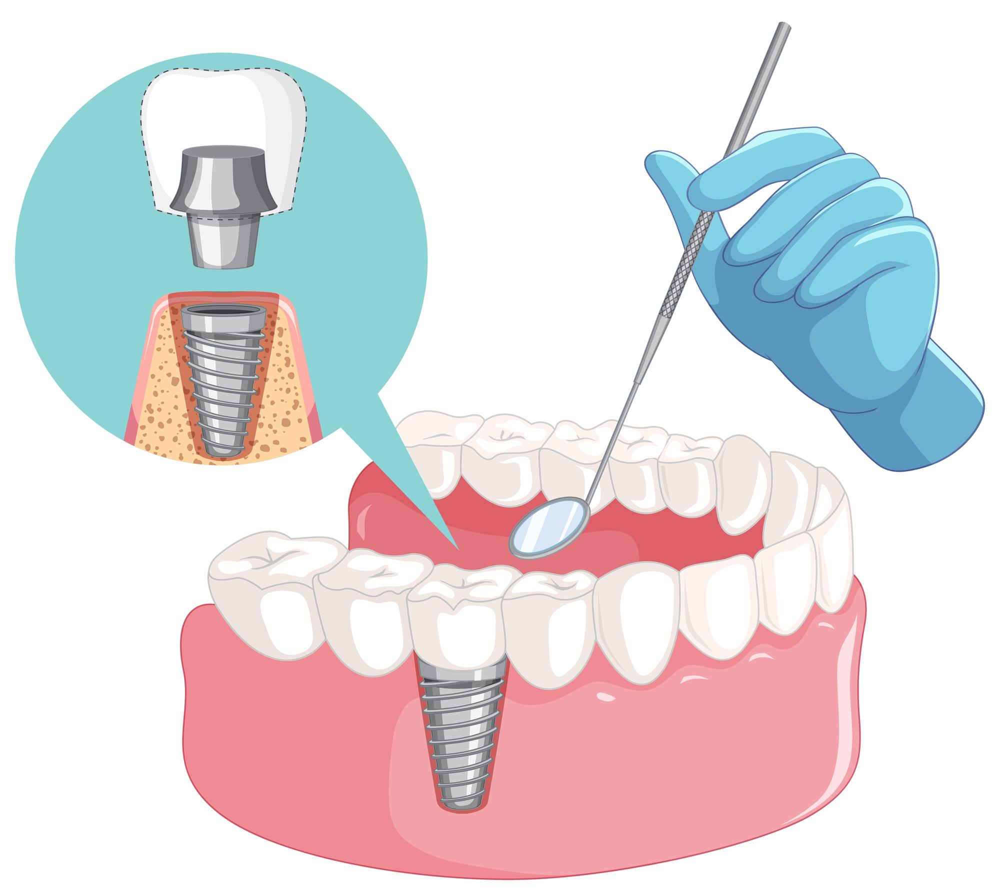
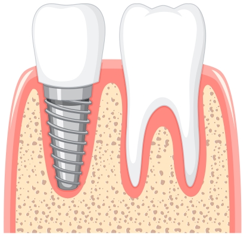
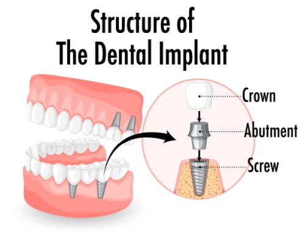

English
English
İmplant Diş Tedavisi-Tüm Ağız İmplantı-İmplant Fiyatları İstanbul
İmplant diş nedir? İstanbul implant fiyatları? İmplant tedavisi nedir?
Dental diş implant tedavisi ile ağzında tamamen diş bulunmayan veya bir ya da birkaç dişi noksan olan kişilerde suni kökler kullanılarak implant diş aracılığıyla desteklenen protezler yardımıyla eksik olan dişlerin hem sağlık hem işlev hem de görünüş bakımından ortaya çıkardığı kötü durum ortadan kaldırılmakta, implant diş ana diş kadar güçlü şekilde vazifesini görmektedir. İmplantlı diş, düzenli ve uygun bir ağız temizliği ile tedavi akabinde neler yapılması gerektiğine dair doktor talimatlarına uyum göstererek hayatımızın tüm dönemlerinde rahat ve güven içinde kullanılabilir.
İmplant nedir?
İmplant, vücut dokularına uyumlu ve büyük ölçüde dayanıklı, son teknolojiye uygun titanyumdan üretilen, kaybedilmiş dişin veya dişlerin işlev ve güzel bir görünüm olarak yeniden yerine konulması gayesiyle çene kemiğine yerleştirilen, vida şeklindeki bir uygulamadır. İmplant diş uygulaması ile yeniden kazandırılan diş, doğal diş kökünü taklit eder. Yapılan diş implant uygulaması ile dişin çiğneme fonksiyonu ve kabiliyeti kazanması aynı zamanda yaşam boyunca herhangi bir problemle karşılaşmadan dişin işlevini yerine getirmesi amaçlanır.
Ağzımızdaki tüm diş kayıplarındaki uygulamalarda olduğu gibi diğer sağlam yan dişlerde herhangi bir operasyon yapmadan sadece tek diş eksikliğinde de implant diş tedavisi ile sağlam bir dişe sahip olunur.
İmplant diş tedavisi, tedavi yapılacak kişiye lokal anestezi verilerek yaklaşık yarım saat sürecek bir operasyondur. İmplantlı diş dış bölgesi özel işleme tabi tutulduğundan çene kemiğine hücresel ve mekanik olarak tutunması için hususi bir bağlantı şekli oluşturulur. Bu bağın meydana gelmesi için en uygun bekleme süresi 3-6 ay kadardır. Yapılan araştırmalarda bekleme süresi konulmadan protez uygulaması yapılabileceğine dair fikirler ortaya çıkmıştır. Hastanın sağlığı için menfaatine en uygun olanı sürenin beklenmesidir.
İnsanlar tarafından çok tercih edilen ve vidali diş olarak da bilinen implant diş uygulaması, köprü ve protez tedavi yöntemlerine göre daha başarılı sonuçlar elde edilen, çene bölgesi kemiğine ve dişlere zarar vermeyen bir diş tedavi çeşididir.
İmplant diş tedavisi kimlere uygulanır?
İmplant tedavisine başvurmak isteyen kişiler için “Hangi durumlarda implant diş tedavisi yapılır?” “Kimlere implant tedavisi uygulanır” gibi sorular cevabını bulmak istediği sorulardır. Bu sorular diş hekimi tarafından yapılacak ön muayenede cevabını bulabilir. Çünkü diş hekimi yapacağı muayenede, hastanın yaşı, kronik hastalıkları, bağımlılık geçmişi ve düzeyi, tercihe göre uygulanacak tedavi çeşidi, çene yapısı ve diş etinin son durumuna da bakarak bu soruların cevaplayabilecektir. Bu tespitler implant yapımı için önem arz etmektedir. Implant diş tedavisi yapılabilecek kişiler şunlardır:
- Genel sağlık durumu iyi olanlar.
- Büyüme sürecini tamamlayan ve yeterli düzeyde kemik yapısına sahip olan hastalar.
- Alt yaş sınırı 16-18 yaş aralığında olan kişiler. İmplant tedavisinde üst yaş sınırı yoktur.
- Tedavi sonrasında iyileşmesine engel olacak bir sağlık sorunu olmayanlar.
- Tedavi için çene kemiği genişliği uygun olanlar. (Vidalı diş tedavisinde kemikte yeterli genişlik mevcut değilse tıbbi bir teknikle kemik miktarı artırılarak tedavi yapılabilir.)
- Şeker düzeyi kontrol altında ve düzenli olan diyabet hastalığı olanlar.
İstanbul implant diş tedavisi nasıl yapılır? İmplant tedavisi aşamaları?

Genelde titanyumdan yapılan ve diş köklerini taklit eden küçük vida şeklinde olan implantlar, uygulama yapılacak alandaki kemik yapısına uygun olarak çeşitli ölçülerde olurlar. İmplant dişin, göreceli olarak tedavi aşaması uzun sürelidir. Günümüzde “immediat implant” denilen hemen implant olarak verilen bir kez yapılacak seansta sona erdirilen tedaviler mevcuttur. Fakat tercih edilen genelde 3-6 ay gibi bir süreci alan tedavidir.
İmplant tedavisinde sürecin nasıl ilerleyeceği ilk muayene sırasında belli olur. Bu muayene aşamasında kaybettiği dişlerini tedavi ettirmek isteyen hasta hekim tarafından değerlendirilir. İlk başta diş hekimi hastadan ağız temizliği çok iyi olmasını ister gerekli ise bunun için iyileştirme yöntemlerine başvurabilir.
Hastanın implant planlanan alandaki çene kemik dokusunun tedaviye uygun olup olmadığına bakılır. Diş etlerinin durumu incelenir. Röntgen ve özellikle kemik kalınlığını da göstermesi nedeniyle tomografi, değerlendirme aşamasında iyi bir yardımcıdır. Diş hekimi tarafından değerlendirme yapılırken; Hastanın sistematik durumuna bakılarak, hasta implant uygulamasına uygun mu? değerlendirilir. Bu tedavinin yapılabilmesi için mesela baş-boyun bölgesine radyoterapi uygulanmamış olması, hastanın kemik gelişimini tamamlamış olması, kontrol altına alınamayan diyabet ve tansiyon rahatsızlığının olmaması gerekir. Kemik yapısına zarar veren bazı ilaçların kullanıldığı kanser ve kemik erimesi tedavisi gören hastalar implant tedavisi için uygun değildir. İmplant diş tedavisi yapılacak hastanın kullanmakta olduğu ilaçların diş hekimiyle paylaşılması gerekir.
Hastanın çene kemiği genişlik, yükseklik ve kalite yönünden vidalı diş ürününe uygun yapıda olmalıdır. Çene kemiği yeterli ölçüde değilse kemik seviyesi cerrahi müdahale ile artırılabilir.
Tedavide, hastaya uygulanacak implantlı diş adedi, tedavinin ne kadar süreceği, implant fiyatı konusunu da kapsayacak bir planlama yapılmalıdır. Örneğin tek diş implant veya birden fazla implant yapılacaksa uygulamada her şey değişebilmektedir. Bu nedenle planlama önemlidir.
“İmplant nasıl yapılır ?” sorusun da aslında merak edilen tedavinin ameliyat kısmıdır.
Diş hekimi tarafından yapılan ilk muayene ve değerlendirmenin devamında implant tedavisi uygun görülür ise cerrahi müdahaleye başlanabilir. Diş hekimi veya çene cerrahisi uzmanı tarafından ameliyat ile hastanın çene kemiği içerisine vidalı diş yerleştirilmesi yapılır. Cerrahi müdahale lokal anestezi ile olur. Hastanın ağzında enfeksiyon yoksa ve çene kemiğinin ölçüleri tedavi için uygunsa çekilen dişin yerine hemen dental implant uygulanabilir. Operasyonda hastanın çene bölgesi kemiğinin üzerindeki eti açılır, çene kemiğinin iç bölgesinde hazırlanmış yuvanın içine vidalı diş yerleştirilir. Bu işlemin ardından diş eti tekrar kapatılır. Her vidalı diş başına yaklaşık 5-15 dakika gibi bir sürede işlem bitmiş olur. Müdahale sonrasından bekleme istemeyen immediat implant uygulaması dışında implantların çene kemiğiyle tam uyumlu şekilde bağlanması ve kaynaşması için cerrahi müdahaleden sonra belli bir süre beklenilmelidir. Tekniklerin farklılığına göre implant yaklaşık olarak 2-6 ay kadar çene kemiği içerisinde durur. Bu husus implantın başarılı olmasına katkı sağlar. Tedavinin yapılacağı alanın hijyeni konusunda azami özen gösterilmelidir.
Çene ve implantın kaynaşması için gerekli olan süre geçtiğinde vidalı diş uygulamasının üzerine daha önceden tecrübe edilip ölçüsü belirlenmiş ve modellemesi yapılmış olan protez yerleştirilir. İmplant dişin çeneye yerleştirme işlemi sonrasında ağız temizliğine aşırı özen gösterilmesi gerekir.
İmplant diş tedavisi sırasında ağrı olur mu?
İmplant tedavisi sırasında operasyon yapılırken acı hissedilip hissedilmediği hastalar tarafından çok merak edilmektedir. Hatta implant diş yapılması sırasında acı hisseder miyim? veya vidalı diş tedavisi ağrılı mıdır ? soruları kafamızı kurcalayan kaçınılmaz sorular olmuştur. Implant tedavisi lokal anestezi ile gerçekleştiğinden herhangi bir acı sızı ve ağrı hissedilmez. İnsan çene kemiğindeki sinir dokusu az olduğundan ağrı olmaz bu nedenle yapılacak uygulama için herhangi bir endişeye mahal verilmez. Hastaya verilen anestezinin etkisi geçince ağrı olabilir. Normal bir ağrı olarak görülen bu ağrınız diş hekiminiz tarafından öngörüleceğinden size ağrı kesici reçete edilecektir. İmplantlı diş operasyonu akabinde ameliyat olan kısımda şişlik ve morarma görülmesi normaldir. Diş hekiminiz tarafından önerilmişse şişlik olan bölgeye 10’ar dakika arayla buz torbası koyularak şişlik azaltılabilir. Ayrıca şişlik olamaması için yiyecek ve içecekler sıcak olarak tüketilmemelidir.
İmplant diş tedavisi sonrası nelere dikkat edilmelidir?
- Öncelikle her tedavide olduğu gibi hekiminizin önerileri ve talimatları kesinlikle uygulanmalıdır.
- Tedavi sonrasında akıntı şeklindeki kanamaları engellemek için hastanın ağzına yerleştirilen tamponlar 30 dakika kadar tutulmalıdır.
- Kanamayı çoğaltmamak için tükürmeye, yarayı tahriş etmemeye, uzun süre konuşarak ağız kaslarını harekete geçirmemeye dikkat edilmelidir.
- Tedavi sonrasında yara tamamen iyileşinceye kadar sigara ve alkol kullanımına ara verilmelidir. Sigara ve alkol yara iyileşmesini olumsuz yönde etkilemektedir.
- Ağız ve diş temizliği ve bakımı son derece önemlidir. Diş fırçası implant üzerinde kullanılmamalıdır. Diğer dişler fırçalanmalıdır. İmplantlı diş için diş hekiminin tavsiye ettiği diğer temizlik yöntemleri uygulanabilir.
- Ameliyat sonrası oluşan şişlik ve morlukların giderilmesi için buz torbası veya soğuk havlu yardımıyla kompres yapılabilir. Kompres 5 dakika aralıklarla yapılmalıdır.
- İmplant operasyonu sonrası için diş hekimi tarafından reçete edilen ilaçlar günlük dozajlarına uygun şekilde kullanılmalıdır.
- İmplant tedavisi akabinde 2 saat boyunca hiçbir şey yenilmemeli ve içilmemelidir. Tedaviden sonra yaklaşık bir hafta süresince çok sıcak ve çok soğuk gıdalar tüketilmemelidir. Tedavi edilen bölgeye baskı yapması muhtemel sert yiyeceklerin tüketiminden kaçınılmalıdır. İmplant uygulaması ameliyat olduğundan kesilen yerlerin kapanması bir süre ister.
- Diş hekimi tarafından belirlenecek sıklıkta kontrollerin mutlaka yapılması gerekir.
Kimlere diş implant uygulaması yapılmaz?
- Baş ve boyun kısımlarına radyoterapi uygulanmış hastalar,
- Yeterince kemik büyümesini ve kemik gelişmesini tamamlayamamış gençler,
- Aşırı sigara kullanımı olan hastalar,
- Diyabet ve tansiyonu kontrol altına alınmamış olan hastalar,
- Hemofili ve otoimmun hastalığı olan kişiler,
- Kullandığı ilaçlar nedeniyle bifosfonat, kortikosteroid veya immun sistemi baskılanan kişiler.
Bu kişiler ancak diş hekimi tarafından uygun görülürse implant yaptırabilir.
İstanbul diş implantı hakkında sık sorulan sorular
Birçok etken implant fiyatlari üzerinde etkilidir. İmplant fiyatları belirlenirken diş hekiminin tecrübesi ve başarısı, kullanılacak implant markası ve kalitesi, implant sayısı, uygulanan teknik önemlidir. Vidalı diş fiyatını belirleyen faktörleri aşağıdaki gibi sıralayabiliriz:
- Diş hekiminin deneyim, bilgi ve başarısı.
- Henüz yeterli gelişmeyi sağlayamamış kemik seviyesinin cerrahi müdahale ile yükseltilmesi gibi tedavi öncesinde ek olarak yapılması gereken işlemler.
- Tedavide kullanılacak implantın kalitesi, özellikleri, markası.
- Hastaya uygulanacak implant sayısı.
- Vidalı diş üzerine uygulanacak olan protez ve benzeri ürünlerin marka, kalite, dayanıklılık gibi özellikleri.
- Kullanılacak implant dahil tüm malzemelerin yerli ve/veya ithal olup olmaması. Döviz kurlarındaki hareketlilik yerli implant fiyatlarını daha cazip kılmıştır.
- Tercih edilen nakit ya da taksitli ödeme şekilleri.
Tabi ki güncel diş implant fiyatları en doğru şekilde tedaviyi gerçekleştirecek diş hekimi ile iletişime geçilerek öğrenilebilecektir.
Tedavi sonrasında implant diş bölgesine ne kadar iyi bakarsanız o kadar ömrünü uzatırsınız. Diş hekiminizin tavsiyeleri doğrultusunda kullanılan implant diş ömür boyunca başarılı bir şekilde işlevini görür. Ancak diğer etkenlere de bağlı olarak diş implantın ömrü ortalama 20-30 yıldır.
Tedavi uygulanacak olan bölgede eğer kist, şişlik, enfeksiyon, kanama yoksa, diş çekilmesinin arkasından hemen vidalı diş uygulaması yapılabilir. Kist, şişlik, enfeksiyon, kanama gibi durumlarda bunların iyileştirilmesinden sonra ancak dental implant tedavisi yapılabilir. Diş çekimi çok önceden gerçekleşmişse diş hekimi tarafından yapılacak değerlendirmeden sonra hemen implant tedavisi uygulanabilecektir
Dental implant operasyonun ardından sigara ve alkol kullanımı enfeksiyon riskini yükselteceğinden iyileşme uzayacak ve başarısız sonuçlara yol açacaktır. Bu da dental implantların entegre olamama riskini artırır. Dental implant ameliyatından sonra hastaların en azından yaralar iyileşinceye kadar sigara içmemesi tavsiye edilmektedir.
Tüm ağız diş implantı - Full çene implant nedir? İstanbul implant diş fiyatları ne kadar?
İmplant nedir?
İmplant, birbirinden farklı sebepler dolayısıyla diş kaybının görüldüğü vakalarda, doğal dişlerin yerine yerleştirilen, estetik görünümü ve ihtiyaç duyulan işlevselliği hastaya yeniden kazandıran bir çeşit sabit protezdir. Alt ve üst çenede yeterli kemik hacmi mevcut ise titanyum malzemeden elde edilen vidalı diş çene kemiğine yerleştirilir. Elde edilen bu yapay ve sağlam diş kökünün üzerine protez diş sabitlenir. Yapılan işlem sonrasında hastanın yaşadığı, dişlerdeki eksiklik veya yapı dolayısıyla estetik problem ve çiğneme fonksiyonuna bağlı sorunlar çözülmüş olur. Hasta, kısa sürede sağlığına kavuşur.
İmplant diş tedavisi, dişsizlik vakalarında başvurulan köprü ve takma diş tedavilerine alternatif bir tedavi yöntemi olarak uygulanır.
Full ağız implant tedavisi - Tam ağız diş implant tedavisi nedir?
Tam ağız diş implant tedavisi, çenedeki bütün dişlerin kaybedilmiş olduğu durumlarda uygulanan bir tedavi yöntemidir. Bu tür vakalarda All On Four, All On Six veya tam ağız implant tedavileri uygulanabilir. Uzman diş hekimi, yapılacak muayeneden sonra hastanın durumuna uygun implant diş tedavisini önerecektir. Full ağız implant tedavisi sayesinde hasta, alt ve üst çenesine yerleştirilen implantlar ile çiğneme fonksiyonu için gerekli olan baskı kuvvetini uygulayabilir duruma gelir.
Yapılan diş implantı işlemi sonrasında çeneye sabit veya hareketli olmak üzere protezler ve köprüler yerleştirilir. İdeal ve başarılı implant tekniklerinden olan All On Four işlemi yapılırsa alt çeneye iki, üst çeneye iki olmak üzere konumlandırılan toplam dört adet implant üzerine köprüler yerleştirilir. Arka diş grubuna yani çiğneme dişlerine implant yapılmaz. Bu yüzden yeterli ve rahat çiğneme fonksiyonunu elde etmek için çenede yeterli sayıda implant olmalıdır. Uygulanan implant sayısı arttığında, yerleştirilen köprülerin ömrü de daha uzun olmaktadır.
Tüm ağız diş implantı tedavisi sayesinde hasta, diş kayıplarının yarattığı problemlerden kurtulur. Titanyum malzemeden elden edilen vidalı dişler ve yerleştirilen köprüler birbirine sabitlendiği için dişler sallanmaz. Bu sebeple takma diş protezlerinde meydana gelen konuşurken hareket etme veya yerinden çıkma gibi sorunlar yaşanmaz. Tüm ağız diş implantı; yemek yerken, konuşurken ve gülümserken hastaya ideal konforu ve güveni sunar.
Tüm ağız implant protez nasıl yapılır?
- Tedaviye başlarken uzman diş hekimi tarafından tıbbi görüntüleme yöntemleriyle alt ve üst çenenin kemik niteliğine, genişliğine ve yüksekliğine bakılır.
- Tüm ağız diş implantı tedavisinde kullanılacak implantların sayısına ve konumlandırılacağı bölgelere karar verilir.
- Hastanın ölçüleri alınır ve provalara başlanır.
- Yapılacak işlemler uygulanırken hastanın ağrıyı hissetmemesi için lokal anestezi yöntemine başvurulur.
- Önceden çekilen dişlerin kökleri ve varsa kistler temizlenir.
- Uzman diş hekiminin, muayene sonrası hastaya uygun olarak belirlediği sayıda implant, çeneye yerleştirilir.
- Yerleştirilen implantların çene kemiği ile kaynaşması ve işlem bölgesinin iyileşmesi için bir süre beklenir.
- İyileşme sürecinin ardından hastaya kalıcı protez dişleri takılır.
Full ağız implant tedavisinde protez yerleştirme işlemi iki farklı şekilde uygulanabilir;
- En az 6 ila 8 implant çeneye yerleştirilir. Yerleştirilen implantların üzerine hasta için hazırlanan protez dişler yapıştırılarak sabitlenir. Bu sayede hasta, diş protezlerini çıkarmadan kullanır.
- En az 6 ila 8 implant çeneye konumlandırılır. İmplantların üzerine hareketli protez dişler yerleştirilir. Bu protezler yapıştırılarak sabitlenmez, hasta dilediği vakit diş protezlerini çıkarabilir. Protezler çıkarılabildiği için temizliğini yapmak daha kolaydır.
Tam ağız diş implantı uygulamasının avantajları nelerdir?
- Tamamen diş kaybının görüldüğü vakalarda tam diş protezleri kullanılabilir. Fakat bu protezler işlevsellik yönünden yetersizdir ve psikolojik olarak hastayı yorabilir. Tüm ağız diş implantı, bu bakımdan daha başarılı bir tedavi yöntemidir.
- Full çene implantı ile hasta eskisi kadar sağlam, doğal ve beyaz dişlere sahip olur.
- Tam ağız diş implantı ile hasta; eski yaşam kalitesine ulaşır, estetik anlamda rahat eder, çiğneme fonksiyonlarını yeniden kazanır ve özgüvenle gülümser.
- Uzman diş hekimleri tarafından klinik ortamında ve kaliteli malzemelerle yapılan diş implantı işlemi uzun ömürlüdür.
- Tüm ağız diş implantı tedavisinde kullanılan malzeme titanyum olduğundan vücutla uyumludur ve hastada alerjik reaksiyonlara yol açmaz. Bu yüzden dişsizlik vakalarında önerilen konforlu ve başarı oranı yüksek bir tedavi yöntemidir.
- Takma diş (total protez), hareket edebildiği için hastalarda konuşma zorluğu, hapşırma esnasında oynama, yemek yerken rahat çiğneyememe gibi sorunlara yol açabilir. Full çene implantı tedavisi sonrasında bu sorunlarla karşılaşılmaz.
Tüm ağız implant protez tedavisi kimlere uygundur?
Tüm ağız diş implantı; farklı nedenlerden dolayı dişlerinin tamamını kaybetmiş, konuşmakta ve çiğnemekte güçlük çeken, estetik olarak şikâyeti bulunan yetişkin hastaların yaptırabileceği bir işlemdir.
Bu uygulamayı yaptıracak hastaların;
- Alt ve üst çenelerinde yeterli kemik hacminin bulunması,
- Ağız hijyeninin ve diş eti sağlığının uygun olması,
- Çene yapısının ve genişliğinin elverişli olması,
- Hastanın kemik büyüme ve gelişimini tamamlamış olması,
- Baş ve boyun bölgesinden radyoterapi tedavisi almamış olması,
- Bağışıklığının zayıf olmaması ve buna bağlı sağlık sorunlarının yaşanmaması,
- Kalp hastalığı, tansiyon, şeker gibi sağlık problemlerinin olmaması,
- Tedaviye yakın tarihlerde kan sulandırıcı kullanmamış olması gerekir.
İmplant yaptırdıktan sonra nelere dikkat edilmeli?
- İmplant yaptıran hastalar günlük ağız ve diş bakımlarına özen göstermelidir.
- Tüm ağız diş implantı yaptıranlar, alkol ve sigara tüketiminden kaçınmalıdır. Sigara, kemik hasarına neden olan bakteri oluşumunu tetikleyerek ağız ve diş sağlığını tehdit eder. Ayrıca işlem sonrası iyileşme sürecini uzatır bu yüzden işlemden sonra en az birkaç hafta boyunca sigara içilmemelidir.
İstanbul tüm ağız implantı hakkında sık sorulan sorular
İmplant tedavisi uygulanırken hastaya lokal anestezi verilir bu sebeple hasta işlem sırasında herhangi bir ağrı hissetmez. İşlem sonrasında anestezi etkisini yitirdiğinde, hastaların ağrı hissetmesi normaldir. Uzman diş hekiminin önerdiği ilaçlarla bu ağrıların önüne geçmek mümkündür. Ağrı ve şişme durumlarında buz tedavisi uygulanabilir.
Tüm ağız diş implantı yaptıran hastalar, alt ve üst çenede yeterli kemik hacmine sahipse, çene yapısı uygunsa, ağız ve diş bakımına özen gösteriyorsa ve periyodik muayenelerini takip ediyorsa full çene implantını 25-30 yıla kadar kullanabilir.
Dişsizlik vakalarında, kaybedilen her bir diş yerine implant yapılabilir. Fakat bu yönteme başvurulduğunda, dişlerin arasındaki kemik hacmi yetersiz olacağından implantın ömrü kısalabilir ve çene sağlığına zarar verebilir. Bu yüzden implantlar genel olarak 3-5 mm’lik boşluklar bırakılarak çene kemiğine yerleştirilir, tüm dişlerini kaybetmiş hastaların kemik dokusuna ve ağız sağlığına zarar vermez.